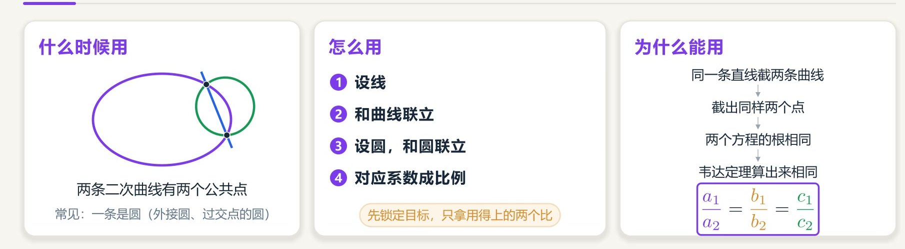
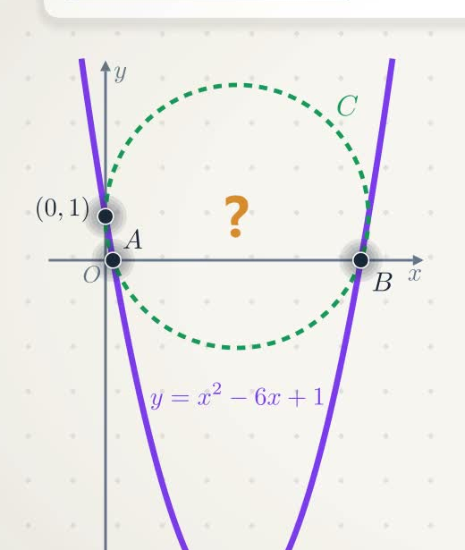
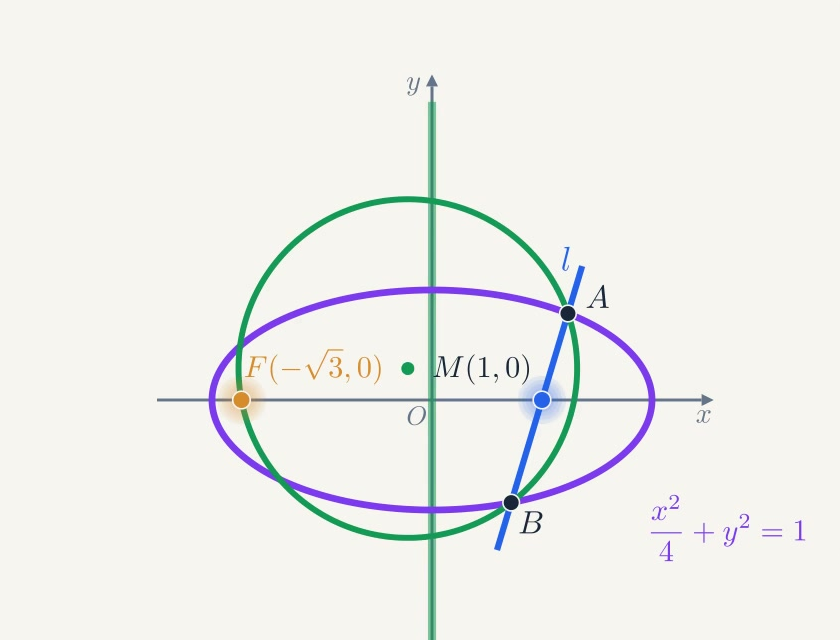
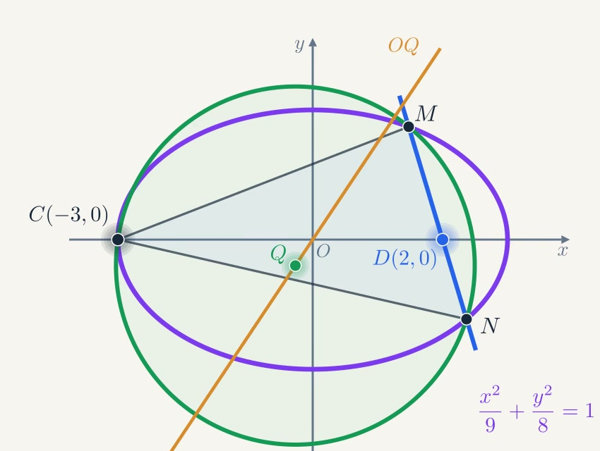
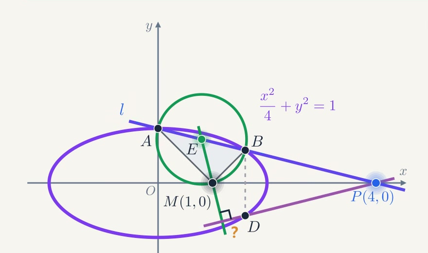

<meta data-alternate="https://freshmark.sunisalex.org/en/" data-article="true" data-canonical="https://freshmark.sunisalex.org/posts/math/conic-same-root-equations/" data-description="摘抄自 B 站可视化数学视频《【可视化】圆锥曲线大题神技！同解方程！计算量砍半！讲透本质！》中的同解方程核心模型与高考模拟大题真题题干。" data-freshmark-page data-title="圆锥曲线大题神技：同解方程 — Freshmark"><main><header class="container article-header"><a href="/" class="back-link">← 返回全部文章</a><p class="eyebrow article-subject">数学</p><h1>圆锥曲线大题神技：同解方程</h1><p class="article-dek">摘抄自 B 站可视化数学视频《【可视化】圆锥曲线大题神技！同解方程！计算量砍半！讲透本质！》中的同解方程核心模型与高考模拟大题真题题干。</p><div class="article-meta"><time datetime="2026-11-08">2026年11月8日</time><span>2 分钟阅读</span><span>圆锥曲线 · 解析几何 · 同解方程 · 高考数学</span><span class="view-count" data-article-view-count hidden>本文访问量 <strong data-article-views></strong></span><a href="index.md" download>下载 Markdown</a><button type="button" class="article-share" data-share-article data-share-text="摘抄自 B 站可视化数学视频《【可视化】圆锥曲线大题神技！同解方程！计算量砍半！讲透本质！》中的同解方程核心模型与高考模拟大题真题题干。" data-share-title="圆锥曲线大题神技：同解方程"><span data-share-label>分享文章</span></button><output aria-live="polite" class="visually-hidden" data-share-status role="status"></output></div></header><div class="article-wrap"><aside class="toc"><div class="toc-head"><p>本文目录</p><button type="button" class="toc-toggle" aria-expanded="false" aria-label="展开或收起目录" data-toc-toggle><span class="toc-toggle-label">目录</span><span class="toc-toggle-icon" aria-hidden="true"></span></button></div><nav aria-label="目录" class="toc-links" data-toc-links><a href="#核心方法回顾同解方程" class="toc-level-2">核心方法回顾：同解方程</a><a href="#1-什么时候用" class="toc-level-3">1. 什么时候用？</a><a href="#2-为什么能用" class="toc-level-3">2. 为什么能用？</a><a href="#3-怎么用四步走" class="toc-level-3">3. 怎么用？（四步走）</a><a href="#试题摘录" class="toc-level-2">试题摘录</a><a href="#引例2011-年高考全国卷文科-第-20-题-1" class="toc-level-3">引例：2011 年高考全国卷文科 · 第 20 题 (1)</a><a href="#我的解答" class="toc-level-4">【我的解答】</a><a href="#例题2024-届四川省绵阳市高三三诊" class="toc-level-3">例题：2024 届四川省绵阳市高三三诊</a><a href="#我的解答-2" class="toc-level-4">【我的解答】</a><a href="#实战一2025-届高三-t8-联考" class="toc-level-3">实战一：2025 届高三 T8 联考</a><a href="#我的解答-3" class="toc-level-4">【我的解答】</a><a href="#实战二2025-届江西省南昌市高三一模-第-18-题" class="toc-level-3">实战二：2025 届江西省南昌市高三一模 · 第 18 题</a><a href="#我的解答-4" class="toc-level-4">【我的解答】</a></nav></aside><article class="prose"><blockquote><p>题目与可视化模型来源：Bilibili <a href="https://space.bilibili.com">@数海无涯乐作舟 / 玄鹤</a> 视频 <a href="https://www.bilibili.com/video/BV17g4H6FE9V/">【可视化】圆锥曲线大题神技！同解方程！计算量砍半！讲透本质！</a><br>本文摘抄整理视频中的全部 4 道精选题干（1 道引例、1 道例题、2 道联考模拟压轴大题），并保留清晰的几何示意图，解答部分留空供自行书写练习。</p></blockquote><hr><h2 id="核心方法回顾同解方程">核心方法回顾：同解方程</h2><p><picture class="responsive-picture"><source srcset="method-summary.freshmark-e897a0bb6d8e-480w.avif 480w, method-summary.freshmark-e897a0bb6d8e-960w.avif 960w, method-summary.freshmark-e897a0bb6d8e-1440w.avif 1440w" type="image/avif"><source srcset="method-summary.freshmark-e897a0bb6d8e-480w.webp 480w, method-summary.freshmark-e897a0bb6d8e-960w.webp 960w, method-summary.freshmark-e897a0bb6d8e-1440w.webp 1440w" type="image/webp"></picture></p><h3 id="1-什么时候用">1. 什么时候用？</h3><p>两条二次曲线有两个公共点（最常见于<strong>圆锥曲线与圆</strong>的交线，例如三角形外接圆、过两定点与圆锥曲线两交点的圆等）。</p><h3 id="2-为什么能用">2. 为什么能用？</h3><p>同一条直线截两条二次曲线，截出完全相同的两个交点：</p><ul><li>直线与圆锥曲线联立，消元得到一元二次方程 ①；</li><li>直线与圆联立，消去同一个元得到一元二次方程 ②；</li><li>因为两方程在几何上具有相同的两实根，由韦达定理可知对应项系数成正比： <span class="math-expression math-display" data-math-source="\frac{a_1}{a_2} = \frac{b_1}{b_2} = \frac{c_1}{c_2}" data-math-display></span></li></ul><h3 id="3-怎么用四步走">3. 怎么用？（四步走）</h3><ol><li><strong>设线</strong>：根据题意设直线方程（如 <span class="math-expression math-inline" data-math-source="x = my + n"></span>&#32;或 <span class="math-expression math-inline" data-math-source="y = kx + m"></span>）；</li><li><strong>和曲线联立</strong>：将直线代入圆锥曲线方程，整理得关于 <span class="math-expression math-inline" data-math-source="y"></span>（或 <span class="math-expression math-inline" data-math-source="x"></span>）的一元二次方程 ①；</li><li><strong>设圆，和圆联立</strong>：设圆的一般方程 <span class="math-expression math-inline" data-math-source="x^2 + y^2 + dx + ey + f = 0"></span>，代入圆上已知定点消去参数，再将直线代入消去相同字母，得到方程 ②；</li><li><strong>对应系数成比例</strong>：锁定设问目标（如外心坐标、斜率关系等），仅提取目标相关的系数比例式进行化简计算。</li></ol><blockquote><p>[!TIP] 同解方程方法的核心优势在于避开繁琐的设点韦达再代入外心垂直平分线的过程，将二元几何条件直接收敛为单一方程的系数比例关系。</p></blockquote><hr><h2 id="试题摘录">试题摘录</h2><h3 id="引例2011-年高考全国卷文科-第-20-题-1">引例：2011 年高考全国卷文科 · 第 20 题 (1)</h3><p>在平面直角坐标系 <span class="math-expression math-inline" data-math-source="xOy"></span>&#32;中，曲线 <span class="math-expression math-inline" data-math-source="y = x^2 - 6x + 1"></span>&#32;与坐标轴的交点都在圆 <span class="math-expression math-inline" data-math-source="C"></span>&#32;上，求圆 <span class="math-expression math-inline" data-math-source="C"></span>&#32;的方程。</p><p><picture class="responsive-picture"><source srcset="example-1-diagram.freshmark-887ce122aad0-480w.avif 480w, example-1-diagram.freshmark-887ce122aad0-520w.avif 520w" type="image/avif"><source srcset="example-1-diagram.freshmark-887ce122aad0-480w.webp 480w, example-1-diagram.freshmark-887ce122aad0-520w.webp 520w" type="image/webp"></picture></p><h4 id="我的解答">【我的解答】</h4><p>设圆的标准方程:<span class="math-expression math-inline" data-math-source="C:x^2+y^2+Dx+Ey+F=0"></span></p><p>贸然确定A,B,C点坐标，然后带入圆的标准方程计算颇为繁杂。</p><p>我们考虑“同解方程”，将<span class="math-expression math-inline" data-math-source="x"></span>轴<span class="math-expression math-inline" data-math-source="y=0"></span>和圆和抛物线联立，分别得到两个一元二次方程: <span class="math-expression math-display" data-math-source="x^2-6x+1=0\\
x^2+Dx+F=0" data-math-display></span>、 由于两个方程的根均为<span class="math-expression math-inline" data-math-source="x_A,x_B"></span>，故对应系数相同: <span class="math-expression math-display" data-math-source="D=-6,F=1" data-math-display></span> 还剩<span class="math-expression math-inline" data-math-source="F"></span>没有确定，带入点C(0,1): <span class="math-expression math-display" data-math-source="1+E+F=0\\
E=-2" data-math-display></span> 结论：圆的方程<span class="math-expression math-inline" data-math-source="C:x^2+y^2-6x-2y+1=0"></span></p><hr><h3 id="例题2024-届四川省绵阳市高三三诊">例题：2024 届四川省绵阳市高三三诊</h3><p>已知椭圆 <span class="math-expression math-inline" data-math-source="C: \dfrac{x^2}{a^2} + \dfrac{y^2}{b^2} = 1\ (a &gt; 1 &gt; b &gt; 0)"></span>&#32;的离心率为 <span class="math-expression math-inline" data-math-source="\dfrac{\sqrt{3}}{2}"></span>，过点 <span class="math-expression math-inline" data-math-source="M(1, 0)"></span>&#32;的直线 <span class="math-expression math-inline" data-math-source="l"></span>&#32;交椭圆 <span class="math-expression math-inline" data-math-source="C"></span>&#32;于点 <span class="math-expression math-inline" data-math-source="A, B"></span>，且当 <span class="math-expression math-inline" data-math-source="l \perp x"></span>&#32;轴时，<span class="math-expression math-inline" data-math-source="|AB| = \sqrt{3}"></span>。</p><p><strong>(1)</strong> 求椭圆 <span class="math-expression math-inline" data-math-source="C"></span>&#32;的方程；</p><p><strong>(2)</strong> 记椭圆 <span class="math-expression math-inline" data-math-source="C"></span>&#32;的左焦点为 <span class="math-expression math-inline" data-math-source="F"></span>，若过 <span class="math-expression math-inline" data-math-source="F, A, B"></span>&#32;三点的圆的圆心恰好在 <span class="math-expression math-inline" data-math-source="y"></span>&#32;轴上，求直线 <span class="math-expression math-inline" data-math-source="AB"></span>&#32;的方程。</p><p><picture class="responsive-picture"><source srcset="example-2-diagram.freshmark-792acfe46682-480w.avif 480w, example-2-diagram.freshmark-792acfe46682-840w.avif 840w" type="image/avif"><source srcset="example-2-diagram.freshmark-792acfe46682-480w.webp 480w, example-2-diagram.freshmark-792acfe46682-840w.webp 840w" type="image/webp"></picture></p><h4 id="我的解答-2">【我的解答】</h4><!-- 在此处书写你的解答过程 --><hr><h3 id="实战一2025-届高三-t8-联考">实战一：2025 届高三 T8 联考</h3><p>已知过 <span class="math-expression math-inline" data-math-source="A(-1, 0), B(1, 0)"></span>&#32;两点的动抛物线的准线始终与圆 <span class="math-expression math-inline" data-math-source="x^2 + y^2 = 9"></span>&#32;相切，该抛物线焦点 <span class="math-expression math-inline" data-math-source="P"></span>&#32;的轨迹是某圆锥曲线 <span class="math-expression math-inline" data-math-source="E"></span>&#32;的一部分。</p><p><strong>(1)</strong> 求曲线 <span class="math-expression math-inline" data-math-source="E"></span>&#32;的标准方程；</p><p><strong>(2)</strong> 已知点 <span class="math-expression math-inline" data-math-source="C(-3, 0), D(2, 0)"></span>，过点 <span class="math-expression math-inline" data-math-source="D"></span>&#32;的动直线与曲线 <span class="math-expression math-inline" data-math-source="E"></span>&#32;交于 <span class="math-expression math-inline" data-math-source="M, N"></span>&#32;两点，设 <span class="math-expression math-inline" data-math-source="\triangle CMN"></span>&#32;的外心为 <span class="math-expression math-inline" data-math-source="Q"></span>，<span class="math-expression math-inline" data-math-source="O"></span>&#32;为坐标原点，问：直线 <span class="math-expression math-inline" data-math-source="OQ"></span>&#32;与直线 <span class="math-expression math-inline" data-math-source="MN"></span>&#32;的斜率之积是否为定值？如果是定值，求出该定值；如果不是定值，说明理由。</p><p><picture class="responsive-picture"><source srcset="practice-1-diagram.freshmark-decb765d84e6-480w.avif 480w, practice-1-diagram.freshmark-decb765d84e6-850w.avif 850w" type="image/avif"><source srcset="practice-1-diagram.freshmark-decb765d84e6-480w.webp 480w, practice-1-diagram.freshmark-decb765d84e6-850w.webp 850w" type="image/webp"></picture></p><h4 id="我的解答-3">【我的解答】</h4><!-- 在此处书写你的解答过程 --><hr><h3 id="实战二2025-届江西省南昌市高三一模-第-18-题">实战二：2025 届江西省南昌市高三一模 · 第 18 题</h3><p>已知椭圆 <span class="math-expression math-inline" data-math-source="C: \dfrac{x^2}{a^2} + \dfrac{y^2}{b^2} = 1\ (a &gt; b &gt; 0)"></span>&#32;的离心率 <span class="math-expression math-inline" data-math-source="e = \dfrac{\sqrt{3}}{2}"></span>，过点 <span class="math-expression math-inline" data-math-source="P(4, 0)"></span>&#32;作直线 <span class="math-expression math-inline" data-math-source="l"></span>&#32;与椭圆 <span class="math-expression math-inline" data-math-source="C"></span>&#32;交于 <span class="math-expression math-inline" data-math-source="A, B"></span>&#32;两点（<span class="math-expression math-inline" data-math-source="A"></span>&#32;在 <span class="math-expression math-inline" data-math-source="B"></span>&#32;上方），当 <span class="math-expression math-inline" data-math-source="l"></span>&#32;的斜率为 <span class="math-expression math-inline" data-math-source="-\dfrac{1}{4}"></span>&#32;时，点 <span class="math-expression math-inline" data-math-source="A"></span>&#32;恰与椭圆的上顶点重合。</p><p><strong>(1)</strong> 求椭圆 <span class="math-expression math-inline" data-math-source="C"></span>&#32;的标准方程；</p><p><strong>(2)</strong> 已知点 <span class="math-expression math-inline" data-math-source="M(1, 0)"></span>，设直线 <span class="math-expression math-inline" data-math-source="MA, MB"></span>&#32;的斜率分别为 <span class="math-expression math-inline" data-math-source="k_1, k_2"></span>，设 <span class="math-expression math-inline" data-math-source="\triangle AMB"></span>&#32;的外接圆圆心为 <span class="math-expression math-inline" data-math-source="E"></span>，点 <span class="math-expression math-inline" data-math-source="B"></span>&#32;关于 <span class="math-expression math-inline" data-math-source="x"></span>&#32;轴的对称点为 <span class="math-expression math-inline" data-math-source="D"></span>。</p><ul><li><strong>(i)</strong> 求 <span class="math-expression math-inline" data-math-source="k_1 + k_2"></span>&#32;的值；</li><li><strong>(ii)</strong> 求证：<span class="math-expression math-inline" data-math-source="ME \perp PD"></span>。</li></ul><p><picture class="responsive-picture"><source srcset="practice-2-diagram.freshmark-eefab688413d-480w.avif 480w, practice-2-diagram.freshmark-eefab688413d-880w.avif 880w" type="image/avif"><source srcset="practice-2-diagram.freshmark-eefab688413d-480w.webp 480w, practice-2-diagram.freshmark-eefab688413d-880w.webp 880w" type="image/webp"></picture></p><h4 id="我的解答-4">【我的解答】</h4><!-- 在此处书写你的解答过程 --></article></div><section class="container comments" data-comments data-comments-path="/posts/math/conic-same-root-equations/"><div class="comments-head"><div><p class="eyebrow">评论</p><h2 data-comments-title>评论</h2></div><p>登录后参与讨论。注册时只需验证一次邮箱。</p></div><div class="comment-list" aria-live="polite" data-comment-list><p class="comment-state" data-comment-state>正在加载评论…</p></div><button type="button" class="comment-more" data-comments-more hidden>加载更早的评论</button><div class="comment-auth" data-comment-auth><p class="comment-auth-status" data-auth-loading>正在检查登录状态…</p><div hidden data-auth-guest><form class="comment-auth-form" data-auth-login><h3>登录后评论</h3><label>邮箱<input autocomplete="email" name="email" maxlength="254" required type="email"></label><label>密码<input autocomplete="current-password" name="password" maxlength="128" required type="password"></label><div class="comment-form-foot"><p class="comment-form-status" role="status" data-auth-login-status></p><button type="submit">登录</button></div></form><details class="comment-register"><summary>还没有账号？注册</summary><form class="comment-auth-form" data-auth-register><label>昵称<input autocomplete="name" name="name" maxlength="40" required></label><label>邮箱<input autocomplete="email" name="email" maxlength="254" required type="email"></label><label>密码<input autocomplete="new-password" name="password" maxlength="128" required type="password" minlength="8"></label><p class="comment-auth-hint">至少 8 个字符。</p><div class="comment-form-foot"><p class="comment-form-status" role="status" data-auth-register-status></p><button type="submit">注册</button></div></form></details></div><form class="comment-auth-form" hidden data-auth-verify><p>验证码已发送到邮箱，请在 10 分钟内完成注册。</p><label>六位验证码<input autocomplete="one-time-code" name="code" maxlength="6" required minlength="6" inputmode="numeric" pattern="[0-9]{6}"></label><div class="comment-form-foot"><p class="comment-form-status" role="status" data-auth-verify-status></p><button type="submit">完成注册</button></div></form><div class="comment-auth-user" data-auth-user hidden><p>当前登录： <strong data-auth-user-name></strong> <span data-auth-user-email></span></p><button type="button" data-auth-logout>退出登录</button></div></div><form class="comment-form" hidden data-comment-form><label>评论内容<textarea maxlength="2000" minlength="2" name="body" placeholder="写下你的想法…" required rows="5"></textarea></label><p class="comment-markdown-hint">支持 Markdown：加粗、链接、引用、列表和代码。</p><label aria-hidden="true" class="comment-honeypot">Website<input autocomplete="off" name="website" tabindex="-1"></label><div class="comment-form-foot"><p class="comment-form-status" role="status" data-comment-form-status></p><button type="submit" data-comment-submit>发表评论</button></div></form></section></main>